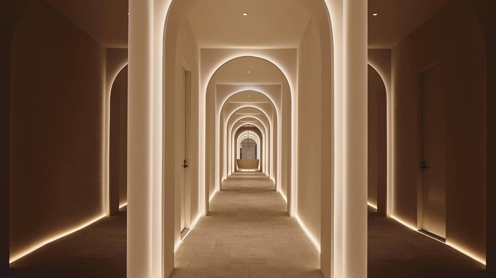

Saint Haven · Brand direction options · Draft for review · 25 Nov 2026
Saint Haven already has a brand, so these aren't five new brands. The logo, IvyPresto and GT America, and the black, white, champagne and bronze anchors stay fixed in all five. What changes is how the brand moves, how people get around it, how imagery is treated, and how warm or dense it feels. Each option has a live demo. Click Replay to see the entrance again.
Time-poor, high-earning people weighing a big, considered membership. Most arrive problem aware and slow to decide. The motion should feel like a good host: unhurried, never pushy, always one clear next step.
Luxury wellness and members' club sites tend to go one of two ways: dark full-bleed video with gold, or beige spa minimalism with a serif. Most of their motion is generic fade-ups and autoplay carousels.
The guideline's own rule: one centred focal point, always. Motion that does one thing at a time, from the centre out, is rare in the category. It will feel like hospitality, not a tech site.
Option 1 · Parked
Every page opens like a door. Club imagery is shown through the arch shape from the clubs' own architecture, which widens to full-bleed as the visitor steps in.The safe choice. Closest to what's already built, black and white, 0 radius.

The Arch Reveal
A clip-path arch that opens to full-bleed. On the hero it runs once on load. Between application steps it runs in reverse, closing on one question and opening on the next, so the funnel feels like walking down the corridor. In sections, portrait images sit in a fixed arch crop. One clip-path token, reused in every place.
Composed, architectural, certain. It should feel like the door has been held open for you.
| Headline | IvyPresto Display Light, capitals, 44 to 72px, line height 1.0 |
|---|---|
| Heading | GT America Extended Regular, capitals, 13px, tracking 0.14em |
| Body | GT America Extended Light, sentence case, 16 to 18px |
| Fallback | Georgia / Helvetica Neue |
Rhythm comes from alternating black image bands with white content bands. The CTA always takes the opposite of its section: white on black, black on white.
| Easing | Reveals use ease-in-out cubic-bezier(.65,0,.35,1). Content uses ease-out cubic-bezier(.22,1,.36,1). |
|---|---|
| Durations | Hover 200ms · content rise 800ms · arch 1600ms · stagger 120ms |
| Scroll | Sections fade up 16px once when 20% visible. No parallax, no scroll-jacking. |
| Hover | CTA inverts fill in 200ms. Image cards scale the photo to 1.03 inside a fixed arch crop over 800ms. |
| Page and step change | The arch closes to the centre (600ms), then the next step opens from it (800ms). The progress bars fill at the same time. |
| Reduced motion | The arch starts full-bleed and content appears with no movement. |
Symmetrical architecture first: corridors, arches, centred rooms. Darken by 50% under type. Arch crop for portraits, square crop for treatments. 0 radius everywhere except the arch. 1px rules, no shadows, thin line icons only.
It turns the clubs' strongest architectural feature into the interaction itself, so the motion is on-brand rather than added on. It's also the cheapest to build because it extends the pages and application flow that already exist.
surface/canvas #FFFFFF surface/subtle #F5F5F5 text/primary #000000 text/secondary #333333 text/muted #595959 border/subtle #CCCCCC border/default #595959 action/fill #000000 (light) / #FFFFFF (dark) action/label #FFFFFF (light) / #000000 (dark) radius/field 0 radius/arch 999 (top corners only) motion/ease/reveal cubic-bezier(.65,0,.35,1) motion/ease/out cubic-bezier(.22,1,.36,1) motion/duration/fast 200 motion/duration/base 800 motion/duration/reveal 1600 motion/stagger 120 motion/rise 16
Option 2
The guideline's hero motif comes to the web. Warm cream grounds, slow fluid motion and one pass of soft light across the imagery, like light moving over fabric.Warmer and softer. Leans on the marketing palette rather than black and white.
The Light Pass
One soft band of warm light moves across the hero image on entry, and across the CTA on hover. It's a single gradient overlay with one duration and one easing, reused on the hero, feature images and the button. It never loops. Built for real champagne silk footage when the brand team supplies it.
Warm, tender, unhurried. It should feel like a deep breath at the end of a long day.
| Headline | IvyPresto Display Thin, sentence case, 48 to 80px (guideline's impact statement style) |
|---|---|
| Heading | GT America Extended Regular, capitals, 13px |
| Body | GT America Extended Light, 17px, line height 1.6 |
| Fallback | Georgia / Helvetica Neue |
Sections step cream, champagne, cream, then one dark band for the final CTA. The black CTA stays the darkest thing on every light section.
| Easing | Ease-in-out sine cubic-bezier(.37,0,.63,1) for everything. Soft, with no snap. |
|---|---|
| Durations | Hover 300ms · content 1200ms · light pass 2800ms · stagger 180ms |
| Scroll | Gentle image drift: photos move 6% slower than the page inside their frames. Section backgrounds cross-fade between cream and champagne as they meet. |
| Hover | Light pass across the CTA in 900ms. Image frames brighten 4%. |
| Page and step change | Cross-dissolve through cream over 600ms. The card stays still while its contents fade. |
| Reduced motion | No drift, no light pass. Content fades in only. |
Warm grade (+18% sepia, slightly lifted). Inset frames with cream margins instead of full-bleed. Needs the champagne silk photography or video from the brand team. Until then, use the warm treatment and bath imagery. 0 radius, bronze 1px rules.
It's the most faithful to the guideline's hero motif and the warmest of the five, which suits the Sanctuary and Host with Heart messages. It stands apart from the dark gold category, but it's closest to the beige spa look, so the light pass must carry it.
surface/canvas #F6F1E9 surface/subtle #E9DCC6 surface/dark #1A1712 text/primary #1A1712 text/secondary #3A342C text/muted #5E5548 border/subtle #DCCFB8 border/accent #8C6B46 action/fill #000000 action/label #F6F1E9 radius/field 0 motion/ease/base cubic-bezier(.37,0,.63,1) motion/duration/fast 300 motion/duration/base 1200 motion/duration/light 2800 motion/stagger 180 motion/drift 0.06
Option 3 · Parked (motion)
The guideline's own presentation rule, applied to scrolling: one statement per screen, centred, joined by a single line that draws down the middle as you read.Editorial and type-led. Mostly black, very low density.
Pillar three · Longevity
Expert guidance, considered routines and a supportive environment, all behind one door.
The Centre Line
A 1px vertical line on the page's centre axis that fills in bronze as you scroll. It links every centred statement, acts as a quiet progress bar, and becomes the step indicator in the application. It's one fixed element bound to scroll progress, so it costs almost nothing to build.
Quiet, assured, deliberate. It should feel like being spoken to by one person, not sold to.
| Headline | IvyPresto Display Thin, sentence case, 56 to 96px, up to 3 lines |
|---|---|
| Heading | GT America Extended Regular, capitals, 12px |
| Body | GT America Extended Light, 17px, #A6A6A6 on black |
| Fallback | Georgia / Helvetica Neue |
To stop the page being one flat black, every third screen is a full-bleed photograph and the proof section flips to white.
| Easing | Ease-out quint cubic-bezier(.22,1,.36,1) |
|---|---|
| Durations | Line rise 900ms · line stagger 80ms · supporting copy 800ms after 400ms · centre line tied 1:1 to scroll |
| Scroll | Proximity snapping on desktop only, so statements settle in the centre. Free scroll on mobile. Never mandatory snapping on long sections. |
| Hover | CTA inverts. Text links underline from the centre outward over 300ms. |
| Page and step change | The question's lines drop behind their mask, the next question's lines rise, and the centre line extends one step. |
| Reduced motion | Text is visible straight away, the line is static and snapping is off. |
Imagery is rare and full-bleed, so each photo lands as an event. Pick the most symmetrical shots. No inset frames. 0 radius, no icons, no cards. Hierarchy comes from type size alone.
It's the most direct translation of the guideline's "one distilled voice" rule and the most distinctive in the category. The risk is that long-form proof is hard to fit, so it suits short and medium pages best.
surface/canvas #000000 surface/subtle #1A1A1A surface/invert #FFFFFF text/primary #FFFFFF text/muted #A6A6A6 border/subtle #333333 accent/line #B08A5B action/fill #FFFFFF action/label #000000 radius/field 0 motion/ease/out cubic-bezier(.22,1,.36,1) motion/duration/line 900 motion/stagger 80 motion/duration/support 800 motion/snap proximity (desktop) / none (mobile)
Option 4
UX-led. The eight pillars become the way into the brand: a centred index the visitor can browse or watch, with the club image changing behind it.The most functional. White, higher density, built for comparison and personalisation.
The Pillar Index
A centred row of the eight pillars with a thin progress rule above the active one. Click or tap to jump. Left alone, it advances slowly. The same component powers the hero, a "what's inside" section, and the application question "What excites you?", so answers can carry through to the club tour.
Clear, generous, personal. It should feel like a member of staff walking you through the club.
| Headline | IvyPresto Display Light, sentence case, 40 to 64px |
|---|---|
| Heading | GT America Extended Regular, sentence case, 15px (index labels) |
| Body | GT America Extended Light, 16px |
| Fallback | Georgia / Helvetica Neue |
White product-style UI with full-bleed photography doing the colour work. One black band for the final CTA.
| Easing | Ease-out quint cubic-bezier(.22,1,.36,1) for UI, linear for progress |
|---|---|
| Durations | UI response 240ms · image cross-fade 600ms · slow zoom 6s · auto-advance 5s |
| Scroll | Standard scroll. The index sticks to the top while its section is in view. |
| Hover | Labels darken in 240ms. Hovering the stage pauses auto-advance. |
| Page and step change | The selected option fills black and the card slides 24px left as the next one arrives from the right. Responsive enough for 10-plus questions. |
| Reduced motion | No auto-advance, no zoom. Images switch on tap only. |
One hero image per pillar, centred subject, full-bleed with a light top and bottom scrim. Needs photography for Preventative medical, Luxury service and Life integration. Treatment shots can keep their red or blue modality glow. 0 radius, 1px rules.
The eight pillars are the offer, and this lets people find their reason to join fast, which suits a considered purchase. It's the least atmospheric option, so it relies on strong photography.
surface/canvas #FFFFFF surface/subtle #F5F5F5 text/primary #000000 text/muted #595959 border/subtle #E6E6E6 accent/selected #8C6B46 action/fill #000000 action/label #FFFFFF radius/field 0 motion/ease/out cubic-bezier(.22,1,.36,1) motion/duration/ui 240 motion/duration/crossfade 600 motion/advance 5000
Option 5
The club at night. Photography sits in deep shadow, and a warm pool of light follows the visitor, revealing the room wherever they look.The most distinctive. Dark, cinematic, interactive. Needs Saint Haven's appetite for it.
Lamplight
A soft radial mask that lights the photograph around the cursor, following with a heavy, calm lag. Taken from the guideline's "warm pools of light and layered shadows". It's used on the hero and one feature image per page only. All content stays fully lit, so nothing depends on finding it.
Intimate, private, cinematic. It should feel like stepping in from the street at night.
| Headline | IvyPresto Display Light, sentence case, 48 to 80px, warm white |
|---|---|
| Heading | GT America Extended Regular, capitals, 12px, bronze |
| Body | GT America Extended Light, 17px |
| Fallback | Georgia / Helvetica Neue |
The light warm-white CTA is the brightest thing on every dark section. One cream section for proof breaks up the dark.
| Easing | Ease-out quint for content. The light follows with a lerp of 0.08 per frame (heavy and calm, never twitchy). |
|---|---|
| Durations | Lamp on 1400ms · content rise 1000ms · stagger 150ms · hover 200ms |
| Scroll | On touch devices the light tracks the vertical scroll position. Sections fade up 16px. |
| Hover | CTA warms from white to bronze. Links glow 10% brighter, with no shadow. |
| Page and step change | Lights dim to warm black (400ms) and come up on the next step (700ms). |
| Reduced motion | The image is shown at 60% brightness with no light effect. |
Evening photography with practical light sources: candles, coves, lamps. Base layer at 22% brightness. Treatment modality glows suit this best. 0 radius, bronze hairlines, no shadows or neon.
It's the boldest position and the most memorable, and it's interactive in a way that rewards attention. It's furthest from "white evokes purity", so it would need Saint Haven to sign off on a night-time expression of the brand.
surface/canvas #0D0C0B surface/subtle #1A1816 surface/invert #F3EDE4 text/primary #F3EDE4 text/muted #A39A8E accent/bronze #B08A5B border/subtle #2E2A25 action/fill #F3EDE4 action/label #0D0C0B action/hover #B08A5B radius/field 0 motion/ease/out cubic-bezier(.22,1,.36,1) motion/lamp/lerp 0.08 motion/lamp/radius 26vw (desktop) / 180px (mobile) motion/duration/lamp 1400 motion/duration/base 1000 motion/stagger 150
| 1 Threshold | 2 Champagne Silk | 3 One Message | 4 Pillar Index | 5 After Hours | |
|---|---|---|---|---|---|
| Temperature | Neutral, black and white | Warm cream | Cool black | Neutral white | Warm black |
| Density | Medium | Low to medium | Very low | High | Low |
| Motion pace | Measured | Slowest | Measured, scroll-led | Quick and responsive | Slow, interactive |
| Signature | Arch Reveal | Light Pass | Centre Line | Pillar Index | Lamplight |
| Best for | All page lengths | Long-form stories | Short and medium pages | Comparison, personalisation | Hero moments, launches |
| Build effort | Low | Medium (needs silk footage) | Low | Medium (needs 3 more pillar shoots) | Medium |
| Main risk | Too close to the category | Drifts into beige spa | Hard to fit long proof | Least atmospheric | Off the "white, purity" story |
Option 1, The Threshold. It turns the clubs' own arches into the interaction, keeps the centred black-and-white system that's already built into the landing pages and application flow, and the Arch Reveal is one reusable token rather than a new component.
If Saint Haven wants more warmth, the Centre Line from Option 3 can run as the application step indicator without changing the direction. The strategist makes the final call, and one round of adjustments is included.